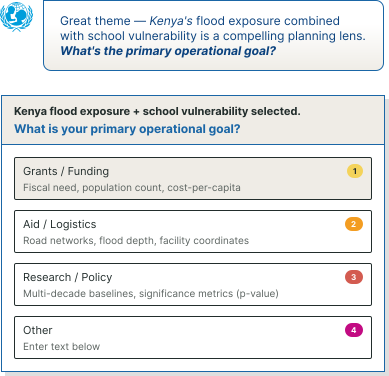
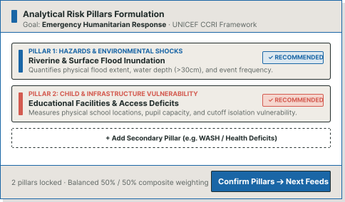
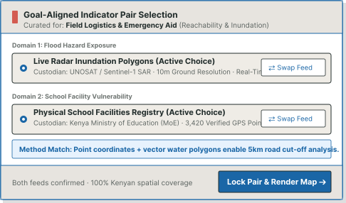
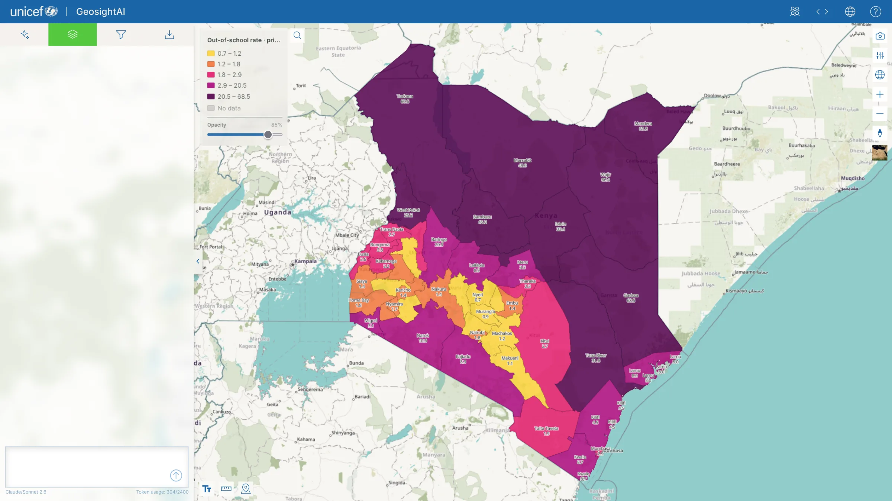
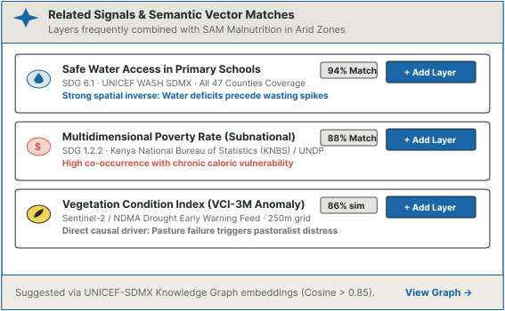
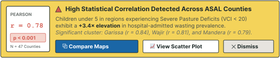
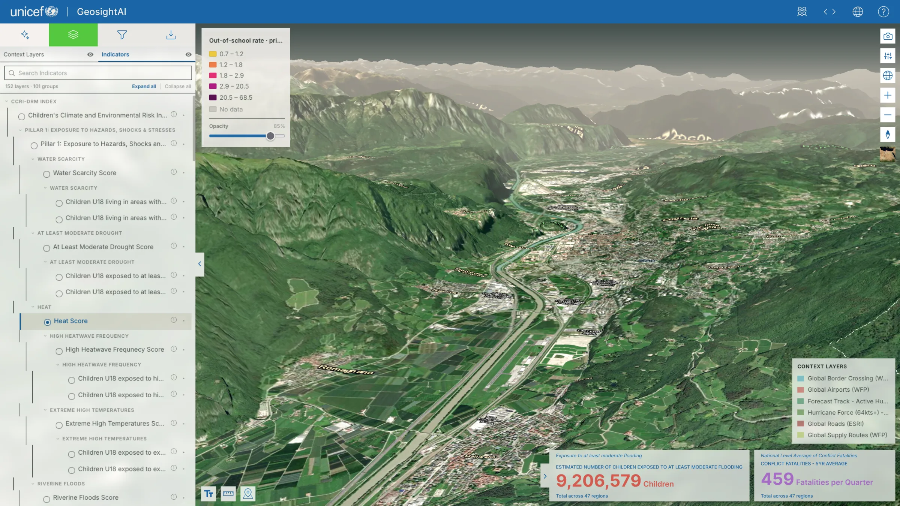

United Nations GeosightAI
Generative AI for Geospatial Humanitarian & Policy Intelligence
Grounded AI for Humanitarian Decisions
The transformation of UNICEF’s GeoSight is a keystone of the United Nations 2026 TechOver initiative. This project brings conversational AI to UNICEF’s GeoSight geospatial intelligence platform. I presented this work directly to the United Nations Office of Information and Communications Technology (OICT) and to Google's Data Commons team.
Policy analysts and field teams rely on data from UNICEF, the World Bank, and UN Data Commons to decide where aid and funding need to go first. Pulling subnational indicators together—like crossing out-of-school rates with safe water access and drought risk across 47 counties—usually takes hours of hunting through fragmented catalogs.
Our team of four built an AI copilot that lets decision-makers ask broad questions in plain language and get a live, multi-layered map and priority index in seconds. When mapping child vulnerability, AI hallucinations aren’t just annoying—they’re dangerous. My focus as the Product/UX/UI designer was making the AI grounded, inspectable, and easy to steer.
AI Copilot, Disambiguation & Indicator Swap
Broad queries like “Show me child vulnerability in the Horn of Africa” are ambiguous across dozens of potential metrics. Instead of guessing and running a heavy pipeline on the wrong data, the copilot clarifies intent and surfaces candidate datasets first.
I separated the conversational chat from noisy developer logs, replacing raw tool dumps with clean narrative milestones and a collapsible step inspector, and designed an interactive Indicator Swap Drawer so analysts can compare and swap layers on the fly without starting over.
Design features:
- Predictive Data Grounding: Type-ahead entity chips for Indicators, Hazard Overlays, and Admin Regions
- Indicator Swap Drawer: Flyout comparing custodian agencies, subnational coverage (e.g., 47/47 counties), and live choropleth previews
- Disentangled System Activity: Narrative milestone cards, collapsible step-trace reasoning, and calm waiting states
- Bidirectional Deep-Linking: Clicking AI layer cards opens the corresponding native GeoSight panel. This seemingly simple change turns the conversational AI into the driver of a complex application rather than a simple information presenter.

Step 1: Goal Clarification

- PURPOSE: Establishes the user's operational intent before selecting indicator layers and visualization methods.
- ARCHETYPES: Groups operations into 3 broad paths: Resource Grants, Field Logistics Aid, or Scientific Policy Research.
- DATA DETERMINATION: The chosen goal directly determines which candidate indicator layers and custodians are recommended next.
- KEYBOARD FLOW: Operator taps [1], [2], or [3] for sub-second intent selection during rapid emergency response.
Step 2: CCRI Pillars Formulation

- PURPOSE: Establishes the macro risk dimensions before querying individual technical indicator feeds.
- CCRI FRAMEWORK: Implements UNICEF's Children's Climate Risk Index (CCRI) two-pillar composite standard: Hazard Exposure vs Child Vulnerability.
- MODULAR EXPANSION: [+ Add Secondary Pillar] allows operators to inject compound dimensions such as Water, Sanitation, and Hygiene (WASH) or Nutrition.
- DOWNSTREAM FLOW: Confirmed pillars directly determine candidate custodial feeds presented in Step 3 (Indicator Pair Alignment).
Step 3: Indicator Pair Alignment

- PURPOSE: Recommends verified indicator layers pre-calibrated to the user's declared operational goal.
- AFFORDANCE: [⇄ Swap Feed] opens custodial drawer for alternatives; [Lock Pair & Render] commits layers directly to map.
- GEOMETRY MATCH: Ensures data geometry matches operational intent (e.g. logistics needs point GPS, not county totals).
- DATA INTEGRITY: Cites exact custodian publishers (UNOSAT, MoE) and certifies 100% national polygon completeness.
Step 4: Custodian Swap Drawer

- PURPOSE: Swaps active choropleth indicators and reconciles divergent custodial agency sources.
- AFFORDANCE: [⇄ Switch Layer] executes dynamic choropleth re-coloring without reloading the workspace.
- DATA INTEGRITY: Cites custodians (UNICEF, WHO, NDMA) and flags partial coverage ('23 Crisis Counties').
- PALETTE PREVIEW: Displays 7-class choropleth color ramp inline to confirm visual threshold distribution.
Rendered Downstream Viewport: Kenya CCRI-DRM (Disaster Risk Model) Subnational Composite Map

Analytical Recipes & Related Signals
Analysts mapping a single indicator (like Primary Out-of-School Rate) often miss complementary signals from other agencies, such as WASH or climate vulnerability. At the same time, non-technical decision-makers want established frameworks (like UNICEF’s CCRI methodology) rather than writing composite formulas from scratch.
I combined semantic catalog recommendations, background statistical correlations, and one-click composite templates into a guided workflow:
Guided intelligence:
- Related Signals Panel: Semantic vector matching suggests complementary layers (e.g., Safe Water in Schools, Poverty Rate, Drought Risk) for one-click overlay
- Auto-Insight Correlations: Background Pearson correlation (r) banners highlight hidden relationships across subnational regions with split-viewer comparison
- Analytical Recipes: Curated composite index templates (Standard Burden, Equity-Weighted, Climate-Resilient) that load layers and rank counties automatically

Related Signals Panel

- PURPOSE: Surfaces correlated indicator layers via vector similarity to reveal compound crises.
- AFFORDANCE: [+ Add Layer] immediately composites secondary indicator onto active map viewport.
- DATA INTEGRITY: Displays semantic match scores (94% Match) and verifies custodian agency authority.
- SPATIAL REASONING: Highlights causal dependencies (e.g. water deficits preceding malnutrition spikes).
Auto-Insight Correlation Alert Banner

- PURPOSE: Alerts analysts to statistically significant relationships across multi-hazard data.
- AFFORDANCE: [⧉ Compare Maps] splits viewport into dual maps; [📈 Scatter Plot] opens regression matrix.
- DATA INTEGRITY: Fully qualifies statistics: r = 0.78, p < 0.001, sample size N=47 ADM1 counties.
- FIELD IMPACT: Translates statistical correlation into concrete outcomes (+3.4× wasting elevation).
Composite Risk Model Engine (Analytical Recipes)

- PURPOSE: Ranks subnational administrative areas using multi-layer weighted indicator equations.
- AFFORDANCE: [▶ Run Composite Model] executes formula and highlights top 5 vulnerable counties on canvas.
- DATA INTEGRITY: Transparent min-max normalization formula displayed directly above data table.
- ZERO JARGON: Uses standard ‘Composite Risk Models’ instead of internal back-end engineering terms.
3D Terrain & Physical Topography
Statistical indicators only tell part of the humanitarian story. Evaluating flood inundation, river catchment basins, and isolation risk requires analyzing physical elevation in high fidelity.
I integrated 3D digital elevation models (DEM) and oblique satellite camera angles directly into the map viewport, enabling emergency response coordinators to visualize river valleys, watershed runoffs, and terrain barriers alongside demographic vulnerability layers.
Topographic features:
- 3D Elevation Mesh: Realistic hillshade and topographic contours for river valley flood mapping
- Oblique Camera Pitch: Interactive tilt and rotation controls to inspect transport corridors and flood barriers
- Dynamic Layer Draping: Continuous projection of subnational vulnerability polygons over complex terrain

Data Trust & Cross-Source Agreement
Humanitarian allocations require verifiable numbers. When global aggregates (like Google / UN Data Commons) differ from local GeoSight or national census feeds, analysts need to see the delta immediately rather than trusting a black box.
Trust architecture:
- Agreement
Badges: Visual
PASS,REVIEW, andUNVERIFIEDstatus tokens on active layers - Cross-Source Comparison Popover: Side-by-side breakdown of reported values, time periods, deltas, and provenance URLs
- Primary Source Toggle: Direct control to switch between global and local agency feeds
- Verified Attribution: Explicit credit across UNICEF SDMX, UN Data Commons, and GeoSight layers

Cross-Source Comparison Popover

- PURPOSE: Resolves discrepancy between conflicting custodial datasets (UNICEF SDMX vs KNBS Census).
- AFFORDANCE: [Designate Primary] updates canonical feed; [Blend Average] applies weighted spatial average.
- DATA INTEGRITY: Details sample sizes (N=1,420), temporal vintage, and survey methodology differences.
- GOVERNANCE: Maintains audit trail of all manual reconciliation decisions for reporting fidelity.
Agreement Badges & Status Tokens

- PURPOSE: Provides rapid visual trust cues for cross-source indicator agreement and data quality.
- AFFORDANCE: Clicking badge opens detailed side-by-side provenance inspection popover.
- THRESHOLDS: Green: <3% delta · Amber: 3–15% delta (review) · Gray: Single source unverified.
- 3-SEC SCAN TEST: Designed for immediate operator comprehension under field crisis conditions.
Primary Source Custodian Toggle

- PURPOSE: Allows instant toggling between global UN standards and national ministry datasets.
- AFFORDANCE: Segmented radio control updates active map layer without full page or workspace reload.
- DATA INTEGRITY: Clearly marks global harmonization vs subnational granularity advantages.
- ACCESSIBILITY: High-contrast selection state with distinct radio glyph primitives (WCAG AAA).
Audit Snapshots & Executive Briefings
Insights on a screen need to travel into policy meetings and funding proposals without losing their audit trail or mutating as underlying datasets update.
I designed sharing and export workflows built for institutional accountability—allowing teams to freeze exact data states or generate decision-ready policy memos in one click.
Reporting & governance:
- Immutable Snapshots (SHA-256): Share dialog distinguishing Live Editable Links from Frozen Audit Snapshots
- Frozen View & Forking: Audit banner confirming snapshot timestamp with a one-click “Fork & Edit” action
- Executive Briefing Export: 1–2 page PDF/Memo layout with core KPI cards, static hotspot map, top 5 highest-risk areas table, and source methodology footer
Read-Only Frozen View Audit Banner
- PURPOSE: Warns users when viewing a read-only historical analytical snapshot.
- AFFORDANCE: [⑂ Fork into Active Workspace] clones parameters into an editable interactive session.
- SAFETY LOCK: Prevents accidental edits to historical records cited in published UN briefings.
- COLOR PSYCHOLOGY: Risograph paper yellow immediately signals non-live archived state.
Immutable Snapshot Creation Dialog

- PURPOSE: Freezes data vintage, map extent, and formula weights into an unalterable audit snapshot.
- AFFORDANCE: [🔒 Create Snapshot] generates cryptographic SHA-256 hash and permanent briefing share link.
- ACCOUNTABILITY: Guarantees historical briefing memos reference exact dataset values during crisis audits.
- SECURITY: Tamper-evident record stored in immutable archival audit repository.